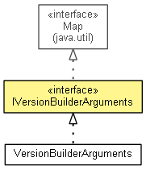

org.eclipse.emf.cdo.releng.version
Interface IVersionBuilderArguments
- All Superinterfaces:
- Map<String,String>
- All Known Implementing Classes:
- VersionBuilderArguments
- public interface IVersionBuilderArguments
- extends Map<String,String>

| Nested classes/interfaces inherited from interface java.util.Map |
Map.Entry<K,V> |
| Methods inherited from interface java.util.Map |
clear, containsKey, containsValue, entrySet, equals, get, hashCode, isEmpty, keySet, put, putAll, remove, size, values |
DEFAULT_VALIDATOR_CLASS_NAME
static final String DEFAULT_VALIDATOR_CLASS_NAME
- See Also:
- Constant Field Values
RELEASE_PATH_ARGUMENT
static final String RELEASE_PATH_ARGUMENT
- See Also:
- Constant Field Values
VALIDATOR_CLASS_ARGUMENT
static final String VALIDATOR_CLASS_ARGUMENT
- See Also:
- Constant Field Values
IGNORE_DEPENDENCY_RANGES_ARGUMENT
static final String IGNORE_DEPENDENCY_RANGES_ARGUMENT
- See Also:
- Constant Field Values
IGNORE_EXPORT_VERSIONS_ARGUMENT
static final String IGNORE_EXPORT_VERSIONS_ARGUMENT
- See Also:
- Constant Field Values
IGNORE_CONTENT_REDUNDANCY_ARGUMENT
static final String IGNORE_CONTENT_REDUNDANCY_ARGUMENT
- See Also:
- Constant Field Values
IGNORE_CONTENT_CHANGES_ARGUMENT
static final String IGNORE_CONTENT_CHANGES_ARGUMENT
- See Also:
- Constant Field Values
IGNORE_MALFORMED_VERSIONS_ARGUMENT
static final String IGNORE_MALFORMED_VERSIONS_ARGUMENT
- See Also:
- Constant Field Values
getReleasePath
String getReleasePath()
isIgnoreMissingDependencyRanges
boolean isIgnoreMissingDependencyRanges()
isIgnoreMissingExportVersions
boolean isIgnoreMissingExportVersions()
isIgnoreFeatureContentRedundancy
boolean isIgnoreFeatureContentRedundancy()
isIgnoreFeatureContentChanges
boolean isIgnoreFeatureContentChanges()
isIgnoreMalformedVersionsButton
boolean isIgnoreMalformedVersionsButton()
applyTo
void applyTo(IProject project)
throws CoreException
- Throws:
CoreException
Copyright (c) 2004 - 2012 Eike Stepper (Berlin, Germany) and others.